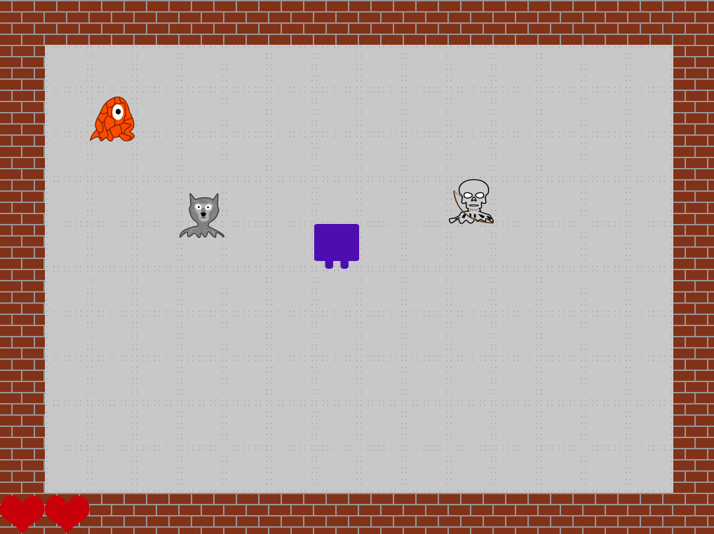

JCrawl Level Design Language
JCrawl provides the user the ability to create, edit existing levels to extend their gameplay experience.
Inside the res folder which was unzipped with the JCrawl.jar, you will find multiple text files. By editing the text files you will be able to edit the levels.
Levels are parsed in this order
level.txt -> level1.txt -> level2.txt -> ….
The first level is always just plain level.txt file.
level.txt file should include the level count which specifies the number of levels player needs the pass to win the game. The other levels don’t need to include this information.
Example level.txt
[levelCount]
1
[layout]
0,0,0,0,0,0,0,0,0,0,0,0,0,0,0,0
0,1,1,1,1,1,1,1,1,1,1,1,1,1,1,0
0,1,1,1,1,1,1,1,1,1,1,1,1,1,1,0
0,1,1,1,1,1,1,1,1,1,1,1,1,1,1,0
0,1,1,1,1,1,1,1,1,1,1,1,1,1,1,0
0,1,1,1,1,1,1,1,1,1,1,1,1,1,1,0
0,1,1,1,1,1,1,1,1,1,1,1,1,1,1,0
0,1,1,1,1,1,1,1,1,1,1,1,1,1,1,0
0,1,1,1,1,1,1,1,1,1,1,1,1,1,1,0
0,1,1,1,1,1,1,1,1,1,1,1,1,1,1,0
0,1,1,1,1,1,1,1,1,1,1,1,1,1,1,0
0,0,0,0,0,0,0,0,0,0,0,0,0,0,0,0
[entity]
p_,7,5
AI,magmatrum,2,2
AI,wolf,4,4
stationary,archer,10,4,2
Output of this file looks like this.

Level Definition
Sample
0,1,1,1,1,1,1,1,1,1,1,1,1,1,1,0
This will create a row of tiles where there will be a wall on the ends and rest will be empty.
0 – Wall
1 – Walkable
Entity Definition
Player
The very first definition must be a player. This is the format:
p_,x,y
Where x is the position in the x axis and the y is the position in the y axis.
AI
AI,type,x,y
This code will generate randomly roaming creature types at the coordinate (x,y) which is of type
Here are the list of valid AI types:
- slime
- wolf
- orc
- magmatrum
Stationary
stationary,type,x,y,dir
This code will generate stationary creature looking at defined direction dir at coordinate (x,y) which is of type type.
Only stationary creature type is archer for this version.
Patrol
patrol,type,x,y,x_t,y_t
This code will generate patrolling creature, using the path made by x,y and x_t,y_t with type type.
Disclaimer:The pathing only supports straight path, so either x and x_t or y and y_t MUST BE EQUAL.
Only patrolling creature type is goblin for this version.